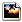

Название
Интернет-магазин — Продажа товаров на сайте
О модуле
| Тип | Публичный |
| Можно создать копий | Сколько угодно |
| Присутствует по умолчанию | Нет |
| Можно удалять | Да |
С помощью данного модуля на сайте можно организовать раздел интернет-магазина, в котором посетитель сможет найти нужный товар в каталоге и заказать его. От модуля каталога товаров данный модуль отличается более гибкими настройками.
Действия для магазина
- →
Создание новой категории товаров в внутри текущей. Для новой категории нужно указать свойства категории.
- →
Отображает список существующих типов товаров.
- →
Создает новый тип товара. В появившемся окне введите название типа.
- →
Отображает список производителей товаров. Нажав на соответствующую иконку, можно изменить свойства производителя.
- →
Добавление нового производителя с указанием его свойств.
- →
Добавление новой торговой марки с указанием её свойств.
- →
Задание явного порядка сортировки товаров в данной категории. Товары с ненулевым приоритетом помещаются в начало и выстраиваются по его возрастанию, товары с нулевым приоритетом сортируются по полю, указанному в параметрах каталога.
- →
Удаление выбранных товаров.
- →
Редактирование параметров магазина.
- →
Настройки расширенного поиска.
- →
Редактирование параметров дополнительного меню каталога.
- →
Задание имен для групп связанных объектов (каталогов, имеющихся на сайте). Благодаря этой функции можно со страницы одного объекта ссылаться на объекты других каталогов. Ссылки на объекты других каталогов будут отображаться под заголовками, задаваемыми этой опцией.
- →
Создать новый товар, указав его свойства.
Действия над категориями
 Редактировать
РедактироватьИзменить свойства категории.
 Вверх
ВверхПереместить категорию вверх в списке.
 Вниз
ВнизПереместить категорию вниз в списке.
 Удалить
УдалитьУдалить категорию.
Действия над товарами
- Редактировать
Изменить свойства товара.
-  Изменить картинку
Загрузить изображение товара.
- Удалить
Удалить товар.
Свойства категории
- Родительская категория
Категория в которую будет включена данная.
- Название
Название категории.
- Подробное описание
Описание категории (форматированный текст).
Свойства производителя
- Название
Название производителя.
- Страна
Можно указать страну производителя.
- Описание
Описание производителя.
Свойства торговой марки
- Производитель
Название производителя торговой марки.
- Название
Название торговой марки.
- Описание
Описание торговой марки.
Свойства товара
- Родительские категории
Одна или несколько категорий, в которые будет включен данный товар.
- Производитель
Производитель товара, выбирается из списка существующих производителей.
- Артикул
Некоторый уникальный код товара, по которому можно его точно идентифицировать, т.к. название товара не всегда удобно делать уникальным.
- Название
Название товара.
- Альтернативное название
Отображается в заголовке окна браузера, т.е. этот параметр задает тег title для страницы товара.
- Цена
Цена единицы товара.
- Краткое описание
Это описание отображается в списке товаров (форматированный текст).
- Содержание
Полное описание, отображаемое при выборе конкретного товара из списка (форматированный текст).
Настройки
- Сколько уровней каталога отображать за раз
При наличии нескольких уровней вложенности в вашем каталоге товаров можно указать сколько из них будет отображаться на одной странице в виде вложенных списков.
- Вид списка категорий
Способ отображения списка категорий - в одну или в две колонки.
- Вид списка документов
Способ отображения списка товаров - в одну или в две колонки.
- Сортировать
Способ сортировки товаров в категории, для которых не установлен явный приоритет сортировки. Возможные значения:
по названию
по коду/артикулу
по цене
по дате публикации
- Кол-во документов на странице
Количество товаров отображаемых на одной странице.
- Показывать описание текущей категории
Отображать или нет описание категории
- Показывать код / артикул товара
Показывать или нет артикул товара покупателю.
- Информация о производителе / торговой марке
Показывать или нет информацию о производителе и торговой марке.
Изображения товаров
- Расположение изображений в списке товаров
Где показывать картинку - слева или справа.
- Максимальный размер изображений (px) в списке товаров
Размер изображений в списке товаров, задается в пикселях.
- Расположение изображения в карточке товара
Слева, сверху или справа.
- Максимальный размер изображения (px) в карточке товара
Размер изображения на странице товара, задается в пикселях.
Расширенный поиск облегчает навигацию по большому каталогу, предоставляя посетителю возможность более удобной навигации с помощью выпадающих списков, где можно сортировать товары по различным параметрам.
- Включить расширенный поиск
Включить/выключить расширенный поиск
- Заголовок формы поиска
Заголовок, который будет отображаться над формой поиска.
- Заголовок списка типов товаров
- Показывать форму поиска
Где показывать форму поиска - на всех страницах интернет-магазина или только на первой.
- Количество столбцов в форме поиска
От двух до семи.